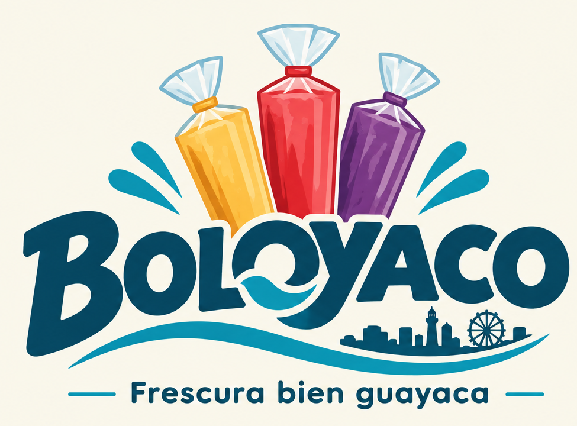

Refresca tu día con nuestros deliciosos bolos
Disfruta de nuestros deliciosos bolos refrescantes, preparados para ayudarte a combatir el calor de Guayaquil.
Ver nuestros sabores
Nuestro catálogo
Elige tus sabores favoritos. Cada bolo viene en su bolsita plástica y cuesta $0,50.
Tu carrito
Revisa las cantidades y el total antes de preparar tu pedido.
Total: $0,00
Sobre nosotros
Somos un emprendimiento dedicado a la elaboración y venta de bolos refrescantes en la ciudad de Guayaquil, Ecuador.
Nuestro objetivo es ofrecer productos deliciosos y refrescantes, ideales para disfrutar durante los días calurosos de la ciudad.
¿Por qué elegir nuestros bolos?
- Productos refrescantes.
- Variedad de sabores.
- Ingredientes de calidad.
- Precios accesibles.
- Ideales para todas las edades.
Encuéntranos en Guayaquil
Estamos ubicados en la ciudad de Guayaquil, Ecuador.
Dirección: Ismael Perez Pazmiño
Teléfono: +593 95 894 7180
Horario: Lunes a sábado, de 09:00 a 18:00